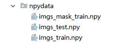

从零开始构建图像分割模型（二）
接上篇，最近完成了一个自己的看到的论文的实验，从零开始从头到尾搭建了一个图像分割网络，来源依据是来源于2015年所提出的图像分割论文，参见此处，接着上篇的内容，这篇主要是完成数据导入到神经网络和神经网络构建的内容。
数据转换
在keras官方的教程里面，我们可以看到原始的图片是可以作为输入数据之间带到神经网络的，但大多数情况下，我们会将这图片数据转换为数组进行存储，便于进一步操作，一般会转换为numpy矩阵进行保存，下列代码将完成从训练图片到numpy数据的转换。
训练数据的转换
我们以训练数据为例，数据首先是通过计算拓展后的数据总量导入数据，导入后的数据，会首先利用keras的image modle导入图片，之后转换为npy文件并保存。
1 | def create_train_data(self): |
同理可以处理test数据。 之后的数据大致预览如下：

进一步处理
在得到这些npy文件后，我们会需要对数据进一步处理以使其适用于神经网络,包括归一化和去均值，以减小计算量，加速收敛。
1 | def load_train_data(self): |
神经网络构建
在有了这部分数据后，我们将会构建起神经网络，下面的代码展示了利用keras构建得到的网络模型的基本结构：
1 | def get_unet(self): |
上述代码构建得到的神经网络大致的结构如下（图片来源于论文原文）：  在这里需要解释的是：
在这里需要解释的是：
merge层
这部分的代码在最新的keras中已经被keras.layers.merge替换，在这里是将两个同等大小的keras向量合并为一个向量也就是我们在上图中看到的crop and copy.但是这并不影响我们的使用，在这里concat_axis被设置为3，即是将其拼接起来，如果是设置为1或者2即会合并为一个与输入数据大小一致的矩阵，无法在后续上采样中还原会原始数据。
网络结构简析
网络结构在前半部分(inputs->drop5)与传统的CNN并无差异，但是在这个之后，采用了一个upsample的操作，这个方法的意义在于做了反卷积操作，关于反卷积可以参考此处，获得更多深入解释。在这里，我们可以理解反卷积是做了一个与卷积相反的操作：即把原先的矩阵上采样化，可以得到卷积核所卷出的特征数据，降低噪音的权重，在上采样后，通过merge层的合并，可以将前部数据进行合并，避免卷积和上采样造成的数据丢失，如：merge([conv1, up9], mode='concat', concat_axis=3)即合并了第一层卷积核最后一层采样的数据。通俗来说，就是神经网络已经掌握了图像的核心特征，现在他要出师了，为了能让他不忘初心，把以前的辛酸泪再给他看看，避免后面太跳，导致过拟合。最后，网络的损失函数还是binary_crossentropy完成。
训练与测试
有了网络以后，我们需要对网络进行训练和测试，下述简要介绍了如何进行训练和测试
网络的训练
1 | def train(self): |
这部分与以前介绍的神经网络无异，有不理解的，可以翻阅前文。特别的是，keras对于model的保存提供了接口ModelCheckpoint,可以依据每个epoch的效果保存最优结果，并存在hdf5文件中。
网络的验证
1 | def test(self): |
检测结果如下所示：

至此，如何将前述的图片转换为神经网络可读的数据，如何构建神经网络，以及训练和测试以及简单介绍完毕，下节将简单介绍一个基于此网络可视化的小工具，以展示神经网络到底如何用在实际的图片检测中。
PS: 可以访问谷歌的朋友们，你们将可以通过disqus进行评论，网络不便捷的朋友，可以点击左侧关于我，进行沟通联系。谢谢！